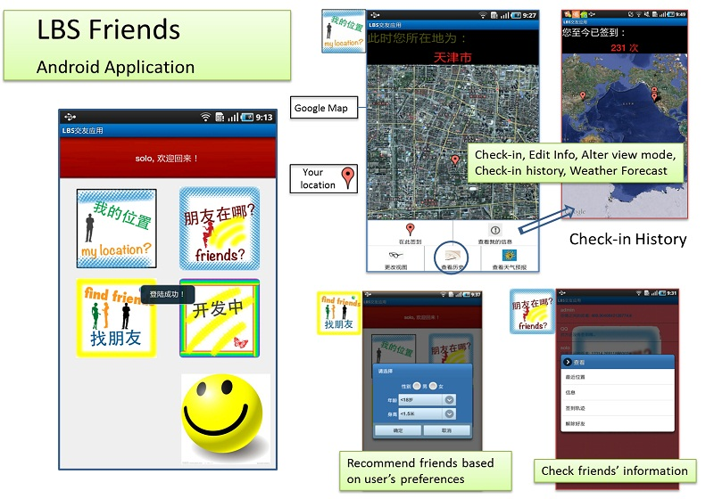

Google Android Application Challenge/
Friends

Independently constructed the server side providing Social Network Service for all the registered users of the application, handling all the requests from the client side and making corresponding changes to the database.
Independently completed the Android client side providing Location Based Service, which enables users to check-in anywhere and find friends nearby, recommends new friends based on their preferences, displays their check-in history, etc.
Applied full-scale knowledge and proficient skills in Android programming (JAVA), JSP Servlet, Spring MVC and the Hibernate framework, with deep understanding of the HTTP protocol, MySQL Database and Tomcat Server.
Sponsored by the National Innovation Fund and selected as the Top Innovation Project of our college.
Joined the Google Android Application Challenge Contest on behalf of Tianjin University.